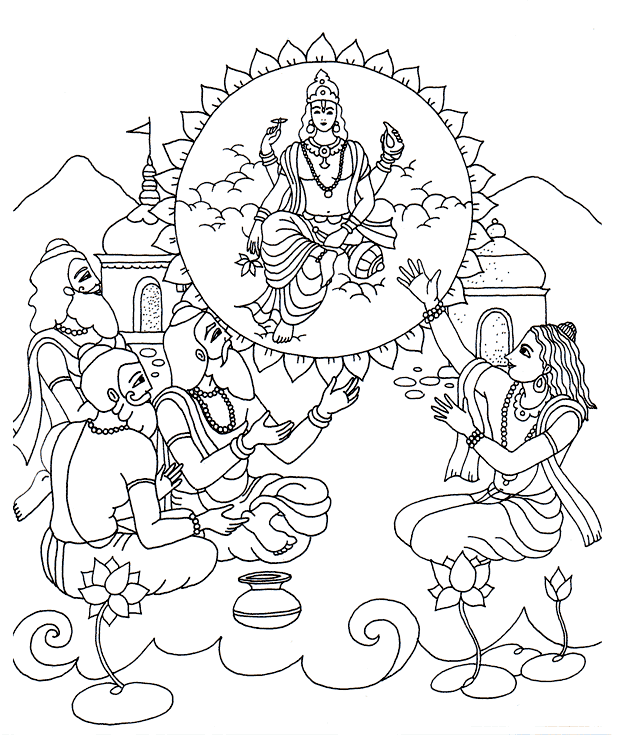

 |
Los sabios concluyeron, que si alguien quiere verdaderamente paz y libertad de todo temor, debe situarse en la modalidad de la bondad pura, es decir debe refugiarse bajo los pies de loto del Señor Visnu. Asi los sabios se liberaron de toda duda en cuanto a la adoración a Visnu, de alli en adelante, todos se dedicaron mas y mas al servicio devocional y alcanzaron asi el resultado deseado, y fueron de vuelta a Dios. Nunca debemos considear que los semidioses, ni siquiera el señor Brahma ni Siva, se encuentran al mismo nivel que el señor Visnu. Muchas Gracias a la madre Mahamrita Devi Dasi que hiso tan lindos dibujos y a Govinda Kumar Prabhu por la corrección de los textos. Jay Sri Hari! |